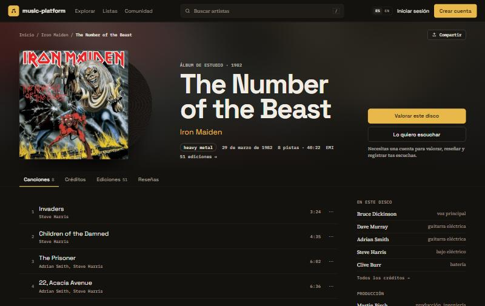

A · Portada
La misma portada a sangre que el artista: fondo con la carátula desenfocada, la carátula grande saliendo de su funda con el disco asomando, título gigante y «Valorar este disco» para el visitante. Pestañas fijas; las canciones con sus compositores y, al lado, quién toca en el disco.
Ventajas
- Una sola familia visual con el artista.
- Compositores y formación sin cambiar de pestaña.
- Primera canción a 733 px en el teléfono.
Desventajas
- La portada se apoya en la carátula: un disco sin carátula queda sobrio.
- Cabecera más alta en escritorio (586 px).